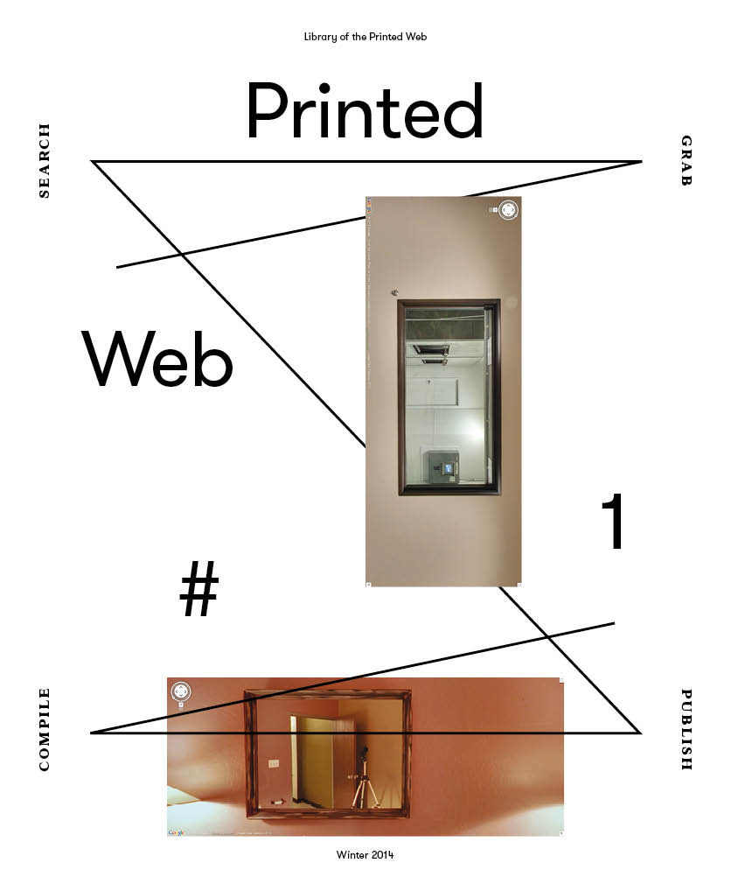
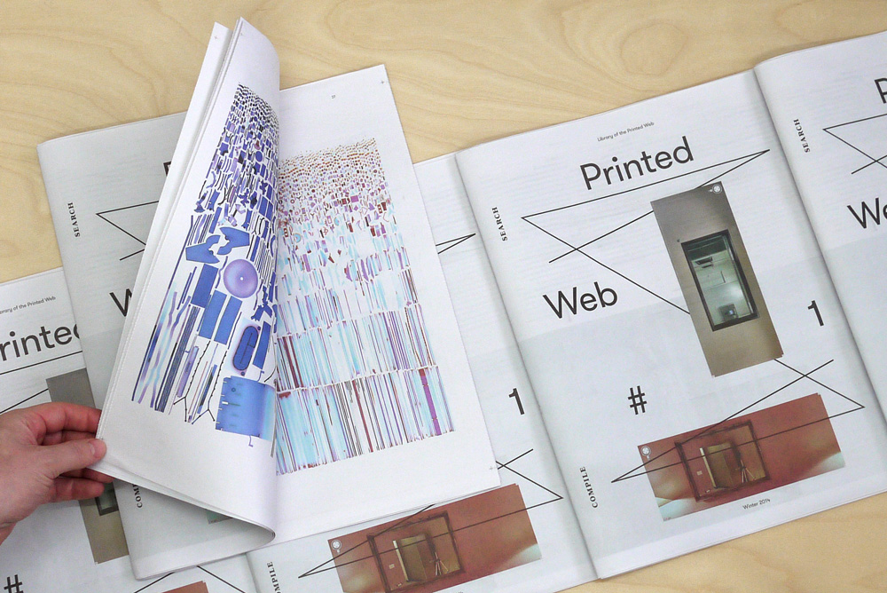
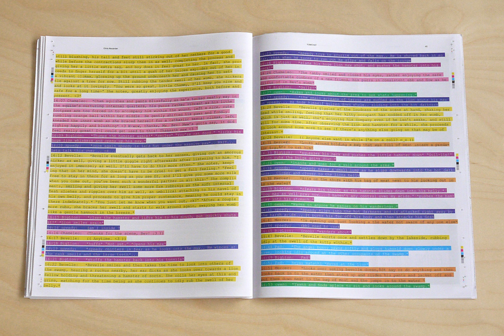

Printed Web 1 (2014)

64 pages
Tabloid newsprint, 11.8 in x 14 in
Full color printing on 52 gsm paper
Edition of 1,000 (sold out)
Published by Paul Soulellis, Library of the Printed Web
ISBN 978-0-9840052-2-2

Contributors—Joachim Schmid, Penelope Umbrico, Christian Bök, Clement Valla, Kenneth Goldsmith, Hito Steyerl, Benjamin Shaykin, Christopher Alexander, Mishka Henner, David Horvitz, Amperamp Press
A copy of Printed Web 1 is in the artists’ books collection at MoMA Library in New York, included as part of MoMA’s acquisition of Library of the Printed Web in 2017.

Download PDF
